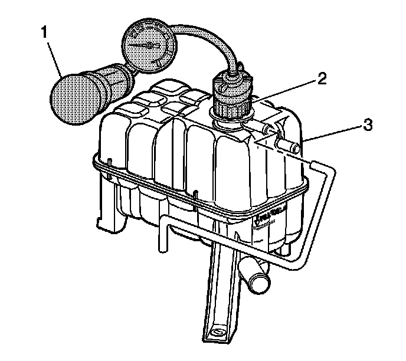

Cooling System Leak Testing
Cooling System Leak Testing
Tools Required
^ J 24460-01 Cooling System Pressure Tester
^ J 42401 Radiator Cap/ Surge Tank Test Adapter
Caution: Under pressure, the temperature of the solution in the radiator can be considerably higher, without boiling. Removing the radiator cap while the engine is hot (pressure is high), will cause the solution to boil instantaneously, with explosive force. The solution will spew out over the engine, fenders, and the person removing the cap. Serious bodily injury may result. Flammable antifreeze, such as alcohol, is not recommended for use at any time. Flammable antifreeze could cause a serious fire.
Caution: In order to help avoid being burned, do not remove the radiator cap while the engine and the radiator are hot. Scalding fluid and steam can be blown out under pressure if the cap is removed too soon.
1. Remove the pressure cap.
2. Test the operation of the pressure cap. Refer to Pressure Cap Testing. Component Tests and General Diagnostics
3. Wash the pressure cap mating surface with water.

4. Use the J 24460-01 with the J 42401 in order to apply pressure to the cooling system.
Do not exceed the pressure cap rating.
5. The cooling system should hold the rated pressure for at least 2 minutes.
Observe the gage for any pressure loss.
6. Repair any leaks as required.